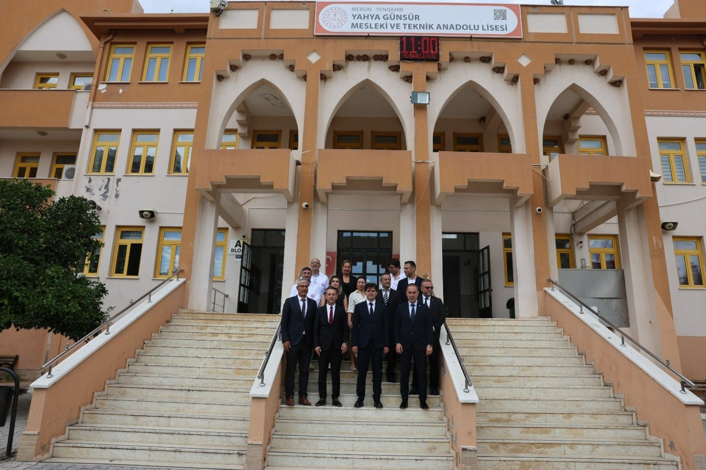
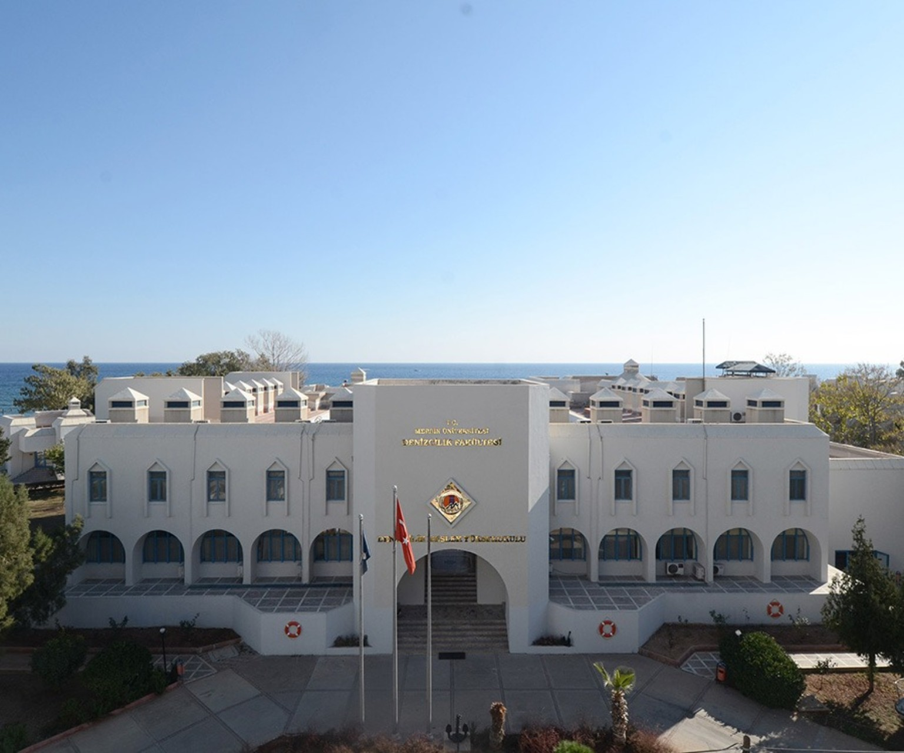

DIGITAL DESIGN & CREATIVE TECHNOLOGY STUDIO
MC Design
& Digital
Fikirleri dijital deneyime, tasarımı görünür markalara dönüştürüyoruz.
Tasarımı↗
Baskıları↗
Menü Tasarımı↗
Tasarımı↗
YÖNETİM & OPERASYONYönetici Metehan Canik
SUPERVISIONSupervisor Rüzgar Selbasan
TECHNICAL OPERATIONSTeknik Operasyon Gökhan Canik
SELECTED CLIENTS & REFERENCES
Referans Firmalar
AdobeChatGPTANYCUBICGurme CateringÇağdaş GroupÇilek BilgisayarWEBTEKNOSamsung
EXECUTIVE PROFILE / 001Yönetici HakkındaMetehan Canik · Özgeçmiş ve profesyonel biyografi+
MC Design & Digital yöneticisi Metehan Canik'in eğitim geçmişi, mesleki deneyimleri, yetkinlikleri ve profesyonel referansları aşağıdaki özgeçmiş bölümlerinde yer almaktadır.
02 / PROFİLHAKKIMDA
ÇOK YÖNLÜ MESLEKİ BİRİKİM
Tek bir alana
sığmayan bir yol.
Farklı sektörlerde edindiğim deneyimi teknik beceri, saha pratiği ve organizasyon disipliniyle bir araya getiriyorum.
İnşaat, bilişim, elektronik, güvenlik sistemleri, sinema operasyonları, mobilya montajı ve temizlik-hijyen ürünleri alanlarında görev aldım. Satış ve pazarlama, piyasa araştırması, teknik servis, bakım-onarım, saha koordinasyonu, ürün araştırma-geliştirme ve sevkiyat/kurulum süreçlerinde sorumluluk üstlendim.
Farklı çalışma ortamlarına uyum sağlayan; ekip çalışması, problem çözme ve iş akışlarının düzenlenmesine önem veren bir çalışma anlayışına sahibim.
ÇALIŞMA YAKLAŞIMIÖğren · Uygula · Geliştir
08Deneyim alanı
03Eğitim kurumu
03Mesleki referans
C2İngilizce
03 / KARİYERMESLEKİ DENEYİM
FARKLI SAHALAR, ORTAK SORUMLULUK
İşin içinde
öğrenilenler.
Deneyimler, özgeçmişte belirtilen görev alanlarına göre düzenlenmiştir. Tarihler doğrulanmadığı için sıralamaya eklenmemiştir.
TİCARİ / SAHA
İnşaat, satış ve organizasyon
Satış, pazarlama, tercümanlık ve organizasyon; müşteri ilişkileri, saha iletişimi ve iş süreçlerinin koordinasyonu.
GÜVENLİK
Güvenlik ve yakın koruma
Terörle mücadele, meskûn mahal uygulamaları ve yakın koruma eğitimleri; güvenlik prosedürleri, disiplin ve koruma faaliyetleri.
ARAŞTIRMA
Elektronik piyasası ve araştırma
Elektronik sektörü, piyasa takibi, fiyat araştırmaları ve piyasa uzmanlığı alanlarında eğitim ve çalışma deneyimi.
TEKNOLOJİ
Bilişim, elektronik ve güvenlik sistemleri
Farklı işletme ve projelerde teknik sistemler alanında görevler. Mersin Serbest Bölge, Mersin Hali ve Mersin Uluslararası Limanı bünyesindeki çalışma ortamlarında deneyim.
ŞANTİYE / OPERASYON
Şantiye operasyonları ve formenlik
Karayolları Genel Müdürlüğü 5. Bölge bünyesinde, Mersin/Erdemli (Kızkalesi) yol yapım şantiyesinde formenlik. Ağır vasıta ve iş makinelerinin bakım-onarımı, yedek parça temini ve saha koordinasyonu; beton laboratuvarı ve taş üretim ocağında uygulamalı deneyim.
ÜRÜN / LOJİSTİK
Mobilya montajı ve temizlik-hijyen ürünleri
Mobilya montajında satış, pazarlama, sevkiyat ve kurulum; temizlik ve hijyen ürünlerinde kimyasal ürün araştırması, saha incelemeleri ve piyasa fiyat analizleri.
SİNEMA TEKNOLOJİSİ
Sinema operasyonları ve makinistlik
Lisanslı film içeriklerinin takibi ve gösterim cihazlarına aktarılması, film kurulumu, altyazı kontrolleri ile görüntü ve perde ayarları.
BİLİŞİM / SİBER GÜVENLİK
Yerel ağ güvenlik protokolleri ve siber güvenlik sistemleri
Sunucu kurulumu, yerel ağ güvenlik protokollerinin uygulanması ve güvenlik yazılımlarının kurulumu ile yapılandırılması.
04 / EĞİTİMÖĞRENİM GÖRDÜĞÜM KURUMLAR
EĞİTİM GEÇMİŞİ
Temeller ve
uzmanlaşma.
İlk ve orta öğretimden üniversite eğitimine uzanan öğrenim geçmişi.
İLK VE ORTA ÖĞRETİM
ÖĞRENİM GÖRÜLEN KURUMAkdeniz Bölge Komutanlığı
İlk ve Orta Öğretim Okulu
MESLEKİ VE TEKNİK EĞİTİM
Yahya Günsur Mesleki ve Teknik Anadolu Lisesi
Yerel Ağ İşletmenliği

ÜNİVERSİTE
Mersin Üniversitesi
Tece Kampüsü · Bilgisayar Teknolojisi ve Bilişim Sistemleri

05 / YETKİNLİKLERUZMANLIK ALANLARI
BİLGİ · BECERİ · UYGULAMA
Birden fazla
disiplin.
Teknik bilgi ile saha ve ticari süreçlerde edinilmiş uygulama deneyiminin birleşimi.
Teknik sistemler
Elektrik-elektronik servis, bakım-onarım, bilgisayar donanımı ve dijital sinema sistemleri.
Ticaret ve analiz
Ön muhasebe, satış-pazarlama, piyasa araştırması, fiyat analizi ve saha değerlendirmesi.
Operasyon ve kurulum
Şantiye koordinasyonu, mobilya montajı, sevkiyat, kurulum ve saha hizmetleri.
Dijital üretim
Web sitesi kurulumu, görsel tasarım, sosyal medya içerikleri ve üretken yapay zekâ araçları.
PROGRAMLAR & TEKNİK ARAÇLAR
C++ · MS-DOS · Microsoft Office · Adobe After Effects · Logo · 3ds Max · Kali Linux · Editorial · E-System · Hyper-V
06 / BELGELERSERTİFİKALAR & DİLLER
EĞİTİM VE YETERLİLİKLER
Belgelendirilmiş
kazanımlar.
01 Yüzücülük ve Cankurtaran Sertifikası
02 Cisco Network Sertifikası
03 Genelkurmay Başkanlığı Yakın Koruma Sertifikası
04 Amatör Denizci Belgesi
05 C2 Work İngilizce Belgesi
YABANCI DİLİngilizce / C2
07 / REFERANSLARMESLEKİ REFERANS PORTFÖYÜ
İSİMLER VE GÖREVLER
Mesleki referanslar.
İsim ve görev bilgileriyle listelenen mesleki referanslar.
01 / EMNİYET
Yavuz Doğan
Şırnak İl Emniyet Müdürü
02 / TÜRK SİLAHLI KUVVETLERİ
Engin Alan
Emekli Korgeneral
03 / TÜRK SİLAHLI KUVVETLERİ
Necdet Özel
Emekli Orgeneral · Eski Genelkurmay Başkanı
08 / FOTOĞRAF ARŞİVİÇALIŞMA YERLERİ · EĞİTİM · KİŞİSEL
GÖRSEL BELLEK
Yolculuğun kareleri.
Kurumlar, çalışma sahaları, eğitim mekânları ve kişisel ilgi alanlarından seçilmiş fotoğraflar.
09 / KİŞİSELİLGİ ALANLARI
İş dışında
keşif alanları.
GÖREV YAPILAN ŞEHİRLER VE ÜLKELER · CV'DE BELİRTİLEN
Türkiye İstanbul · İzmir · Ankara · Antalya · Aydın · Adana
İran Tahran / Afganistan Kandahar
10 / MARKALARTEKNOLOJİ EKOSİSTEMİ
TEKNOLOJİ VE İŞ DÜNYASI
Birlikte çalıştığım
markalar.
Uzun yıllara yayılan mesleki deneyim ve iş birlikleri kapsamında ilişkilendirdiğim teknoloji, yazılım, donanım ve dijital platform markaları.
01Adobe02AMD03Apple04Applied Materials05Business Objects06Express Scripts07Facebook08Cisco09eBay10Electronic Arts (EA)11Google12Fujitsu13Gaia Online14HP15Intel16Intuit17LSI18Maxtor19Hitachi20Juniper Networks21NetApp22NVIDIA23Oracle24SanDisk25Logitech26McAfee27Memorex28Symantec29Sun Microsystems30Yahoo!313Com32Microsoft33SGI34Actel35Actuate36Adaptec37Amdahl38Atari39Netflix40Nintendo41Aricent42ASUS43Netscape44Opera45PayPal46Atmel47BEA Systems48Palm49Redback Networks50SAP51Sony52TiVo53Tellme54SourceForge55Webex56VeriSign57Veritas58VMware59SGI Cube
Marka adları, kullanıcının paylaştığı görselde yer alan logolardan derlenmiştir. Marka sahipleriyle resmî temsilcilik veya kurumsal ortaklık iddiası taşımaz.
11 / GLOBAL AĞDİJİTAL ROTA GÖRSELLEŞTİRMESİ
GEOGRAPHIC CONNECTIONS / MC
Farklı noktalar,
tek bir ağ.
Mesleki ve kişisel yolculukta adı geçen şehirler, hareketli sinyal hatlarıyla aynı harita üzerinde buluşuyor.
Harita, özgeçmişte ve seyahat anlatılarında adı geçen şehirlerden oluşturulmuş temsili bir görselleştirmedir; canlı konum veya gerçek zamanlı takip içermez.
METEHAN CANİK / PROFESSIONAL PORTFOLIO
Her deneyim,
bir sonraki adımın parçası.
Özgeçmiş bilgileri ve kişisel fotoğraf arşivinden hazırlanan profesyonel portföy.
Başa dön ↑